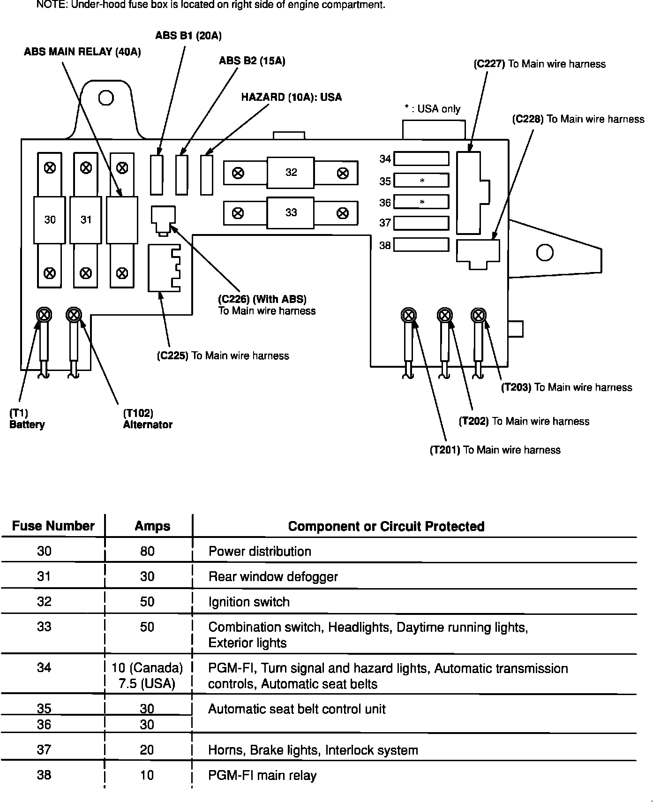

Operation CHARM
: Car repair manuals for everyone.
Home
>>
Acura
>>
1992
>>
Integra L4-1834cc 1.8L DOHC FI
>>
Repair and Diagnosis
>>
Brakes and Traction Control
>>
Antilock Brakes / Traction Control Systems
>>
ABS Main Relay
>>
Locations
ABS Main Relay: Locations
Fuse Panel Details: Under-hood Fuse Box:
